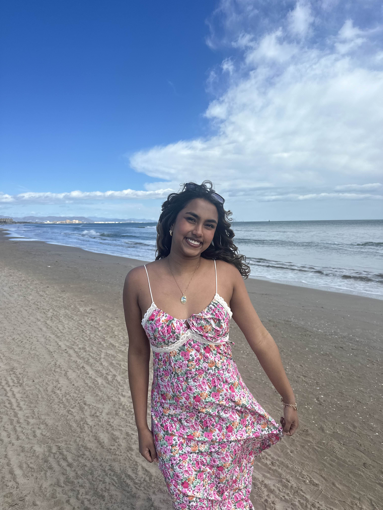

Arpa Das
Social Chair
“I joined Women in Computing to connect with other women in tech and build a sense of community within a male-dominated field. I was looking for a space to share experiences, support one another, and grow both personally and professionally alongside like-minded peers.”